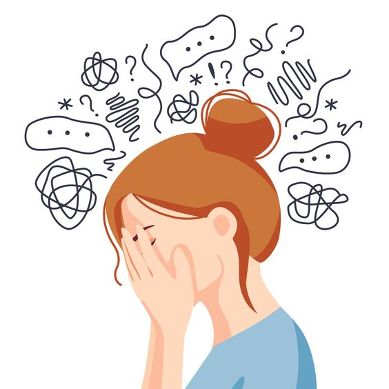

Depression (major depressive disorder) is a common and serious medical illness that negatively affects how you feel, the way you think and how you act. Fortunately, it is also treatable. Depression causes feelings of sadness and/or a loss of interest in activities you once enjoyed. It can lead to a variety of emotional and physical problems and can decrease your ability to function at work and at home.
Depression affects an estimated one in 15 adults (6.7%) in any given year. And one in six people (16.6%) will experience depression at some time in their life. Depression can occur at any time, but on average, first appears during the late teens to mid-20s. Women are more likely than men to experience depression. Some studies show that one-third of women will experience a major depressive episode in their lifetime. There is a high degree of heritability (approximately 40%) when first-degree relatives (parents/children/siblings) have depression.
Common Symptoms:
- Feeling sad or having a depressed mood
- Loss of interest or pleasure in activities once enjoyed
- Changes in appetite — weight loss or gain unrelated to dieting
- Trouble sleeping or sleeping too much
- Loss of energy or increased fatigue
- Increase in purposeless physical activity
- Feeling worthless or guilty
- Difficulty thinking, concentrating or making decisions
- Thoughts of death or suicide

To learn more about Depression